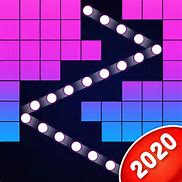

# BRICKS VS BALLS
A Super Fun piano music game to pass your time! Piano Games Mini has many addictive mini-games. Challenge yourself following the music rhythm. In this game, you can enjoy different mini-games with wonderful piano songs. All games are matched with the rhythm of the music. Besides the piano, you can choose different musical instruments as you level up, also there are a lot of themes. Those mini-games are easy to play. The only thing you need to do is just tap to start, tap for fun! ✔Highlights: - More than 25 mini-games and we are working hard to add more - More than 60 piano melody songs, and we are adding more classical songs - More than 10 color tiles to select - Select your favorite Musical instruments - Level up system to unlock more items - Play with friends all over the world If you have any suggestions, please let us know.
# DEEP TOWN
DIG DEEP and uncover the hidden story behind Deep Town and along the way discover story artifacts, dig deeper, and build mining stations to produce more resources! 🔨🔧⛠Wondering if you've got what it takes to be able to manage a large production, earn revenue, and collect story artifacts? Manage your buildings and idle resources and earn enough money to upgrade productions! Make an industrial revolution to manage and automate your mine production. Expand your town mining and give your productivity a boost with drones who will automate the workflow of your mines and give you boosts on other buildings! Deep Town is an idle industrial simulation game that mixes mining, crafting, and management to earn profit and advance your town. The aim of this miner strategy simulator is to build and optimize resources collection to gain as much productivity to help you dig deeper: use special spells 💣 to defeat over 10 different elders to uncover the crust of your town then use a rocket 🚀 to travel into outer space to mine on asteroids! ğŸ”Progress through the game to get the chance to terraform your planet! 🌠Become a pro manager at multitasking and prioritizing your workflow to keep a constant flow of idle revenue - craft recipes, smelt raw resources into bars, use the rain water 🌧 from your water collector to grow seeds into plants in your greenhouse🌲🌱, use miner robots to make your mine deeper to reach the planet's core. FEATURES OF DEEP TOWN ● Free to play ● Free Daily Chest 🎁 ● Automate your mining workflow to increase your idle income ● Upgrade your control panel to power up your spells to dig and destroy blocks FASTER! ● Dig Deeper ⛏ to uncover more areas to build mines, oil buildings and chemistry mines! ● Send explorer bots to hidden caves on secret expeditions to collect artifacts ● Profit from selling your items at the right time in the trading portal and become rich! 💸 ● Upgrade your drone bay and increase your productivity! ● Mine for more than 15 different resources: coal, copper, gold, obsidian and more! ● No Internet connection needed for main game: gain resources online and offline! 📶 ● Climb the leaderboard and become the highest rated guild in this idle miner simulation! 🆠Take a chance and see what combination of spells lets you tap to dig the fastest - how fast can you destroy those blocks? GUILD UP WITH FRIENDS ● Join a guild to compete with other guilds ● Message to chat about strategies and ask for resources. ● Create your own team or search for an existing guild ● Win rewards of chests filled with rare gems and honor badges ● Compete in WEEKLY EVENTS ● Place on Top 30 or All-Time leader board 🆠◠Invite your friends to join in on the FUN!
# DO IT - CONNECT THE DOTS
Dot it is a relaxing glow dot connect casual game for adults and children. The dot 2 dot game can be played anytime and anywhere!ğŸ‘🼠Unleash your creativity 🌸and let the glow dot casual game to be your personal therapist. 💙Easy to play : Connect dots by number to reveal amazing glow pictures! 💚Unlimited dots Puzzle : Updating new puzzle FOREVER😠From entertainment to hardcore players! 💜Stress relief game : Release the stress with the extreme dot to dot game and 🌸feel better during connecting glow dots. Download now✅ and play for FREE!!